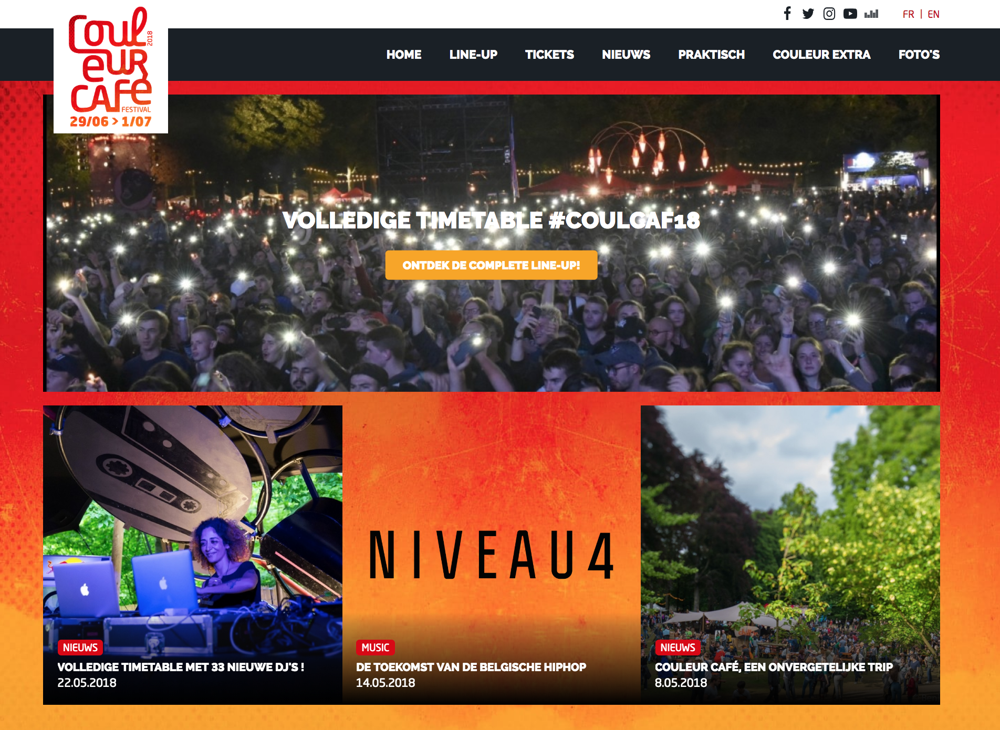
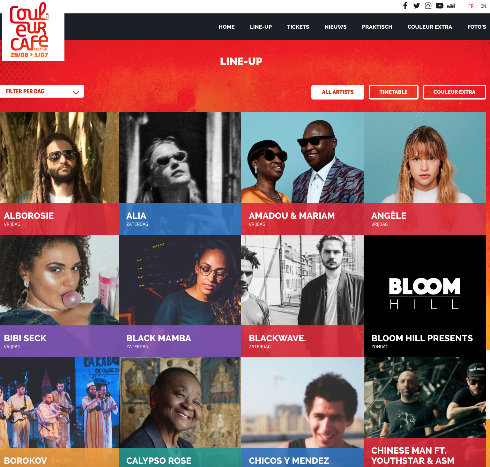
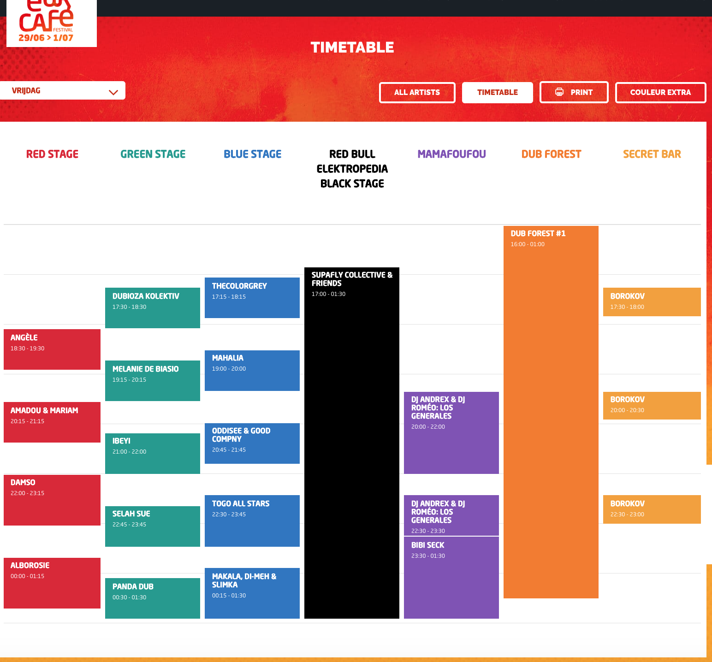
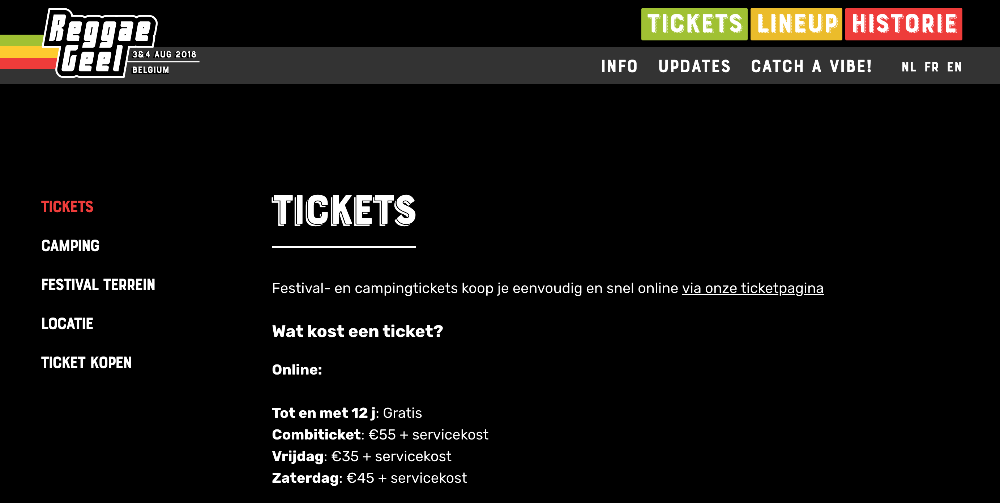
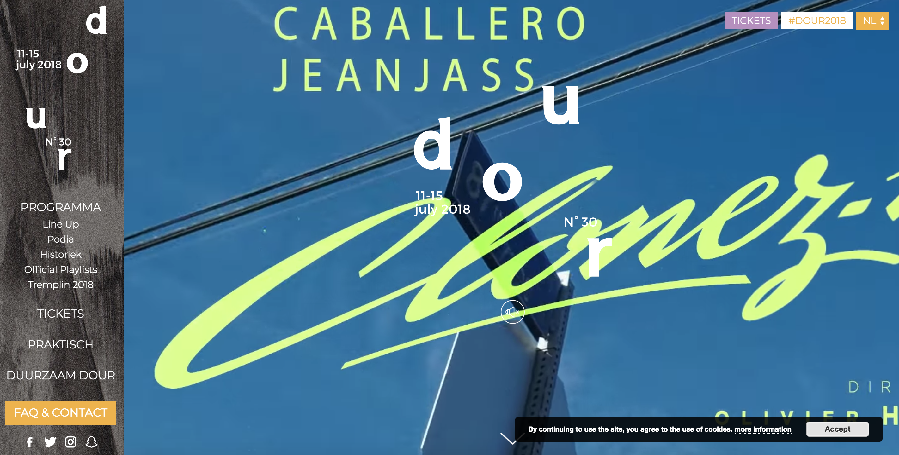
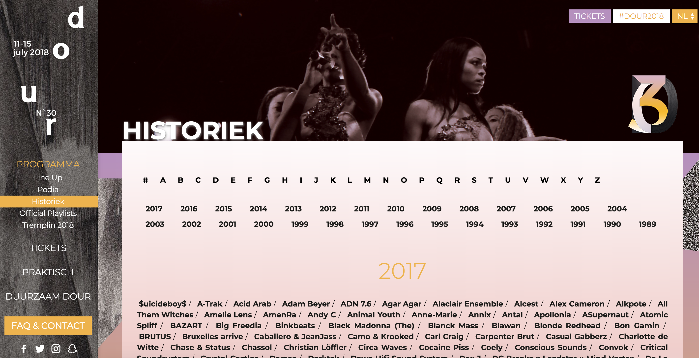

Concurrentie analyse
Er wordt hier gekozen voor 3 concurrenten die zich focussen op een bepaalde doelgroep.
Het zijn ook festivals die hun eigen styl gebruiken die herkenbaar is door het publiek.
1. Couleur Café 2018
Couleur Café 2018



Positieve elementen
- Gebruik van wederkerende, duidelijke kleuren
- Line-up biedt mooi overzicht tussen artiesten en timetable
- Bovenaan direct duidelijke toegang tot social media
- Gebruik van veel beeldmateriaal
Negatieve elementen
- Homepage niet heel overzichtelijk
- Alleen onderaan link naar contactgegevens
2. Reggae Geel
Reggae Geel


Positieve elementen
- Gebruik van herkenbare, eigen kleuren
- Aandacht trekken met een sfeerfoto over de hele homepage
- Gebruik van een quote om de bezoekers aan te spreken
- Nieuwtjes te vinden onderaan de homepage
Negatieve elementen
- Ticketpage ontbreekt mooie layout
- Menubalk aan zijkant niet allemaal in dezelfde stijl
- Geen icoontjes van social media snel terug te vinden
3. Dour Festival
Dour Festival



Positieve elementen
- Gebruik van video op de homepage, om bezoekers van de website het festivalgevoel te geven
- Zeer overzichtelijke website
- Gebruik van het duurzame aspect
- Zijn eigenheid promoten (originele zijbalk en men kan de historiek raadplegen
Negatieve elementen
- Klein balkje voor tickets bovenaan homepage kan storend zijn
- Er mist een link met nieuwtjes